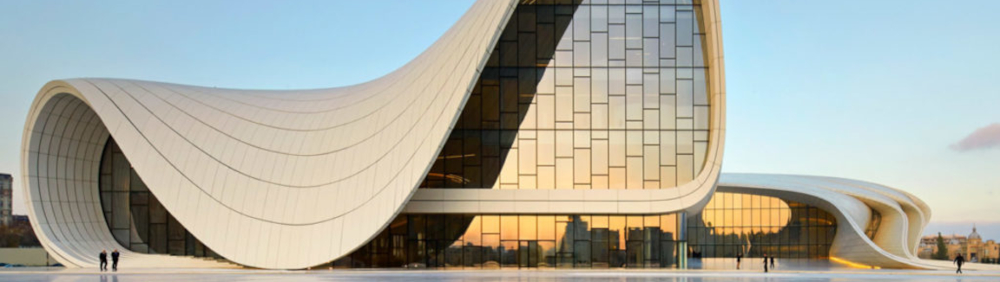

Frases en el lenguaje de la arquitectura
La comunicacion consiste de tres partes claves, el codigo, el mensaje, y el canal. La arquitectura siendo un modo de la expresion artistitica, como una expresion, vemos que las costumbres en la comunicacion son importantes al momento de traducir un mensaje en el espacio. Son estas costumbres y/o frases en la comunicacion arquitectonica lo que permite que una obra no quede como una mera abstraccion del mensaje, y si no una expresion completa con un proposito.
El canal siendo el espacio creado, el mensaje que lleva un espacio se codifica con costumbres arquitectonicas. Por ejemplo, tomemos el disenno de las entradas de las Mezquitas del siglo XVI. Cuando se entra a una de sus cupulas no guardan ningun secreto, podemos entrar por cualquier de las cuatro facetas del cubo estructural. Esta iluminado por completo por los miles de ventanales que rodean la cupula, no queda ni una sombra escondiendo un misterio. Esta frase habla fuertemente sobre el caracter del espacio, siendo uno ligero y poderoso con su luz omnipresente y su altura inmensa. Edificios de este caracter se usan para sennalar que "aqui no es un lugar para los seres humanos, aqui es un lugar para algun ser celeste poderoso" que traduce la estructura del cielo donde reside un ser celeste y lo convierte en la estructura para ese ser. Convierte este simple gesto arquitectonico en una estampa, una frase, la cual puede ser utilizada en el discurso entre las personas y el espacio.
Cuando se utilizan frases arquitectonicas tradicionales en la comunicacion del espacio nos aseguramos de que el mensaje que queremos transmitir no va a ser perdido en la traduccion. Tomemos la oracion que queremos transmitir, si esta compuesta por palabras que nunca hemos visto (aunque tengan sentido completo) se nos va a ser mucho mas dificil interpretar el mensaje del espacio. Existen diversos ejemplos de los distintos "tipos" de intersticio entre dos cubos. Creando espacios ambiguos, o con direccion, vemos que con un acto muy simple podemos transmitir claramente el mensaje y que no hay que abstraernos de la comunicacion tradicional.
Si se tratara de la comunicacion tradicional como un metodo directo de la comunicacion arquitectonica estariamos negando un campo gigantesco de la arquitectura. En esos espacios creados por objetos extraterrestres, se comunica el espacio, no por la forma del objeto creando el espacio, si no por el caracter de la forma creando el espacio. Veamos las figuras organicas de Zaha Hadid, el "Heydar Aliyev Center" en Azerbaijan. Estos espacios organicos no hablan de ninguna estrategia del espacio que se haya visto en el pasado, sin embargo, conllevan un mensaje muy directo sobre las intenciones de Zaha Hadid y su direccion cuando enfrento esta propuesta. Es este caracter el que sustenta sus creaciones organicas.